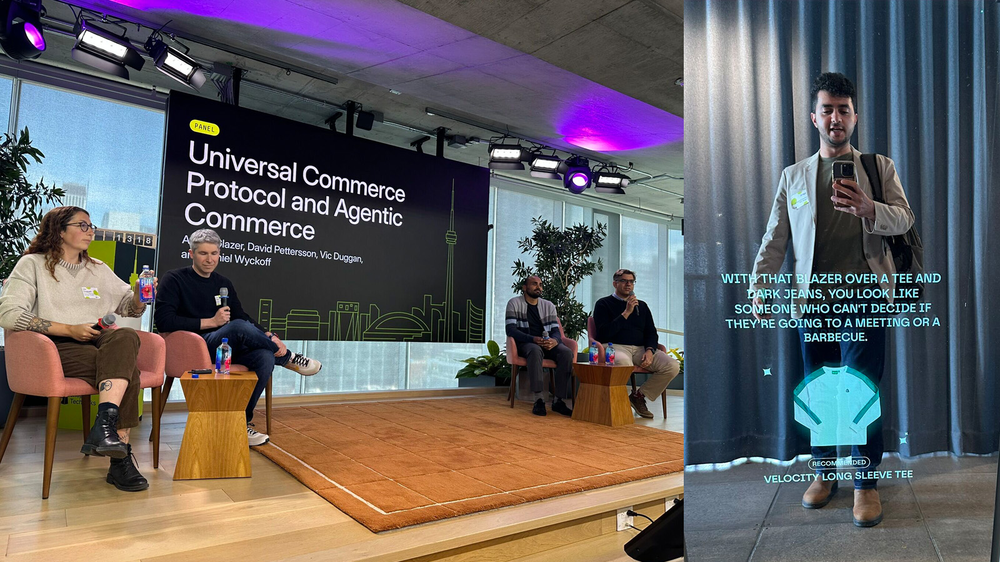
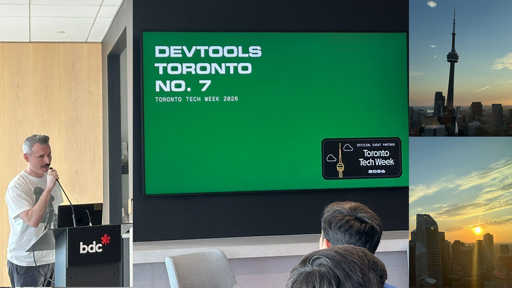
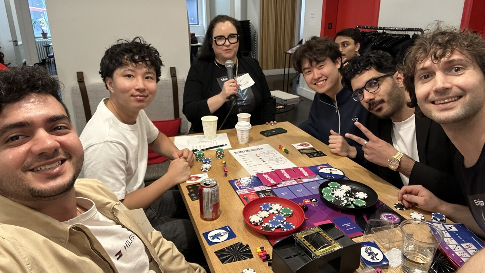

Software Development Engineer
Backend engineer with 6+ years of experience building distributed systems and APIs. Most recently a founding engineer on an AWS product that eliminated redundant engineering work at scale.
About
I'm a backend engineer based in Toronto with a focus on distributed systems, API design, and building software that operates reliably at scale.
Most recently at AWS, I was a founding engineer on a 4-person team that built a host provisioning platform from scratch - a backend service adopted by 5 AWS products, running across 38 regions and supporting ~200K hosts at peak. The work spanned API design, event-driven architecture, encryption, and cross-functional delivery.
Before AWS, I built backend services for a Medicaid eligibility system serving 1.6M+ citizens at Deloitte, where I learned to navigate complex systems, debug deep, and ship carefully.
I'm currently looking for my next role - ideally somewhere with hard problems, strong engineering culture, and room to grow.
Experience
Education
Lately
An AI-enabled mirror roasted me for my outfit 😅
This week I've been at Toronto Tech Week, catching some of the events around the city.
Shopify hosted an engineer focused event yesterday, good sessions, good people, good energy. There were 4 sessions, this is what they covered:
UCP -> An open protocol for agentic commerce. Way more token efficient than traditional web scraping agents.
SimGym -> AI that simulates shopper behaviour. The real challenge is decoding the human behaviour. This removes that bottleneck for merchants and their AI testing.
River AI + Monorepo -> An internal tool that lives in Slack, writes code, raises PRs, fixes bugs on its own. The part about making agent sessions durable was genuinely interesting.
Future of Quantum Computing -> Farhan Thawar in conversation with Christian Weedbrook, CEO of Xanadu. Photonic quantum computing, what's coming, and why cryptography should be paying attention. See more...

Attended DevTools Toronto's Demo Night on Monday, this was also part of Toronto Tech Week.
For context, OpenCode had its first ever public demo at this same event last year, presented by Jay V. It now has 167k stars on GitHub. Says a lot about the kind of ideas that come out of this room.
Here's what was on the night:
Polarity - a QA agent that self improves over time. Runs evaluations inside real sandboxed environments, not mocks.
Superuser, Inc. lets you build and deploy AI agents directly into your team chat. Tools are just serverless functions, shareable and MCP compatible. Basically an arsenal of agents working and chatting with you.
Also on the night: Traces, Tidra, Code Pathfinder, and DocsAlot.
Oh and the view wasn't bad either 👇 See more...

Not every Toronto Tech Week event was about code. This one was about fear, greed and regret.
Attended Finliti's Game of Gains, a board game about investing built around the emotions that actually drive market decisions. They've even turned them into characters, Regretta, FOMO'd, Tracy Complacency, etc.
Played multiple rounds and it holds up. The scenarios mirror real market behaviour, bull runs, downturns, behavioral traps. If you've ever panic sold or held too long, you'll recognize yourself in this game.
What got me thinking as an engineer is how well this translates to a mobile app. The emotional mechanics, character progression, real time market scenarios, there's a lot to build there. Had a good chat with Jennifer Schell about exactly that, their mobile platform is in the works.
Fun event, left thinking about it more than I expected. See more...
